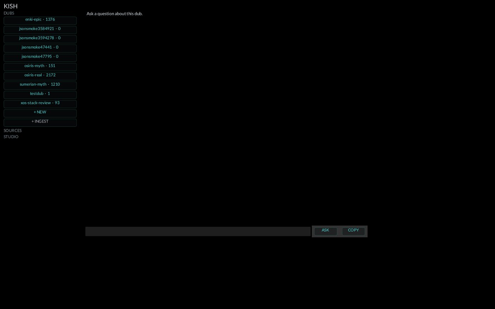

KISH
Kish: the first Sumerian city where "kingship descended from heaven" after the flood — the first library-city. Knowledge held in your own walls, not rented. The vocabulary follows: a notebook is a Dub (clay tablet), the index is Clay, the writer is Thoth, image styles are idiolects.
The library. Notebooks and reports, grounded in your own sources.

Kish — Operator Manual
Sovereign notebook / report engine. Rust, PolyForm Small Business
1.0.0. v0.1 shipped 2026-07-10. Repo ~/XOS/Kish, remote
github.com/3DJ77/Kish (private).
Quickstart
cd ~/XOS/Kish
cargo build --release
./target/release/kish ping orchestrate # prove the LLM seam answers
./target/release/kish dub mynotes # create a notebook (a "Dub")
./target/release/kish ingest mynotes doc.pdf # extract + chunk + embed
./target/release/kish doctor mynotes # audit what actually indexed
./target/release/kish ask mynotes "what does the doc say about X?"
./target/release/kish report mynotes "topic" # cited report -> ~/XOS/Notebook/mynotes/Binary resolves its root via KISH_ROOT, else walks up
from cwd, else from the executable — runs from anywhere, including a
desktop entry.
What it is
Grounded notebooks and reports over your OWN sources — the anti-cloud
NotebookLM. Genesis: Google nuked the operator's NotebookLM work; Kish
is the replacement that lives in these walls. Every model call goes to
local cluster endpoints; nothing leaves the LAN. Answers cite the
sources they came from, and doctor tells you when disk and
index disagree instead of letting RAG hand back a nearest neighbour.
Features
- Dubs — per-notebook workspaces under
dubs/<name>/(sources, clay-index, config). - Ingest —
md/txtread direct;pdfviapdftotext;html/docx/epubviapandoc. Thin-source guard rejects stubs unless--allow-thin. - Retrieval (Clay) — nomic embeddings, linear cosine
scan (HNSW deliberately deferred), embed-model pinned in
index.json— mismatched model errors, never silently degrades. - Ask — cited RAG answer;
--attach FILEinlines textual files (64 KiB cap). - Report — cited markdown report to
~/XOS/Notebook/<dub>/;--storyfor narrative prose (events/names still source-bound). - Folio — illustrated book: Thoth writes scenes,
Eidolon-Forge paints one plate per scene (FLUX-schnell via one GPU
lease), bound to HTML and native PDF
(
folio_pdf.rs, printpdf — the google-chrome shell-out is gone, per the 2026-07-26 sovereignty ruling).--draft/folio-finalize/folio-redraftgive a composition-proof loop;--reuse-platesre-binds without repainting. - Idiolects — ~29 built-in visual voices
(
kish idiolect list), mixable per axis (--medium/--palette/--framing), exportable to TOML,composeprints the exact FLUX prompt without painting. - Exhibit — one subject painted in EVERY idiolect, tiled into a contact sheet.
- Doctor — per-source chunk audit, thin flags,
disk-vs-index disagreement;
--jsonfor machines. - UI —
kish uiopens the native fyrox window (Osirion tokens; iced retired 2026-07-30). Operator launches his own surfaces — never programmatically on :0.
Using it
kish dubs— JSON listing of every Dub (feeds the UI).- Re-ingest of the same file upserts by source, no duplicate chunks.
kish folio <dub> "<topic>" --idiolect lapis-glaze --scenes 8— fails loud if the model returns fewer scenes than asked; no silently merged myths.--sizeis the DIFFUSION edge (768 native for FLUX-schnell; ESRGAN 4x makes it 3072 out). Do NOT pass 3072 — that's an OOM, not a bigger picture.- Dub store override:
KISH_DUB_ROOT; report root override:KISH_NOTEBOOK_ROOT.
How it connects
Model seam in kish.toml — local OpenAI-compatible
endpoints only:
| alias | endpoint | model |
|---|---|---|
| orchestrate | http://$GPU_HOST:18205/v1 (the GPU host's nemotron3
shim) |
nemotron3 |
| synthesize | same (resident-model-wins; per-Dub [override.X] for
alternates) |
nemotron3 |
| embed | http://127.0.0.1:18110/v1 (local CPU,
llama-server@kish-embed) |
nomic-embed-text (v1.5, Apache-2.0) |
Spine gateway is retired (2026-08-01) — Kish talks direct to the
shim. A per-Dub override replaces the WHOLE alias
{base_url, model}, never just the model name.
Siblings: Morpheus renders the images for release
artifacts (Kish = the report half of "image+report for release");
Oannes is the shop-floor advisor sibling. Folio
painting shells to
Eidolon-Forge/python/eidolon_chat_pipeline.py (GPU-host
GPU, one lease per batch).
Known limits
- Embed endpoint down ⇒ ingest/ask/report dead. Chat lane cold-starts ~60s; poll the response body, not the port.
- Not pure Rust yet: shells to
python3(Eidolon),pdftotext,pandoc,montage(exhibit sheet). The Eidolon Python port is a design decision, not a refactor — gated on Eidolon-Forge's own Rust port. - Linear scan only — fine at current corpus sizes; swap to HNSW when a Dub outgrows it (index.json migration deferred to that day).
kish-embedsystemd unit inheritsRestart=on-failurewith noStartLimit*— if it ever flaps, look there first (the spine-server crash-loop lesson).Uidoc-comment inmain.rsstill says "iced" — stale comment, fyrox runs.
Queued
- Fyrox port is IN but the full "proper window GUI" job (T2) plus Osirion visual language pass is gated behind the ponytail full audit.
- Pure-Rust runtime (Job 2): Eidolon pipeline port is the real one;
montagecould go to theimagecrate any time. folio10-arg signature refactor (clippy, out of scope so far).- Podcast/audio generation — deferred (Speechnote + local LLM, later).